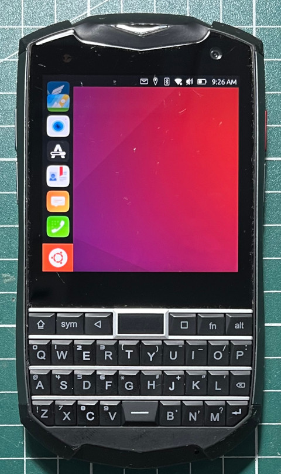

參考資訊：
https://github.com/ubuntu-touch-unihertz-titan/unihertz-titanslim-pocket/tree/master
步驟如下：
1. 進入fastboot模式
2. 執行如下命令
$ wget https://github.com/ubuntu-touch-unihertz-titan/unihertz-titanslim-pocket/releases/download/OTA-4/TitanPocket-boot.img $ wget https://github.com/ubuntu-touch-unihertz-titan/unihertz-titanslim-pocket/releases/download/OTA-4/TitanPocket-ubuntu.img.xz $ xz -d TitanPocket-ubuntu.img.xz $ mkdir -p userdata $ mv TitanPocket-ubuntu.img userdata $ mke2fs -t ext4 -O \^metadata_csum userdata.img 5120000 -d userdata $ fastboot flash boot TitanPocket-boot.img $ fastboot flash userdata userdata.img $ fastboot reboot
完成
